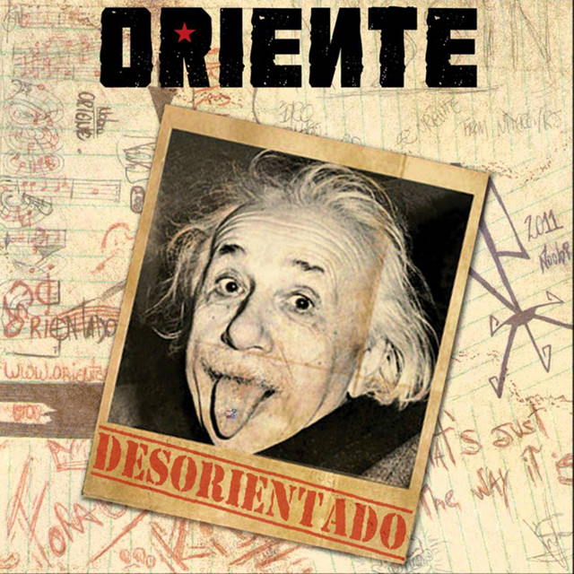
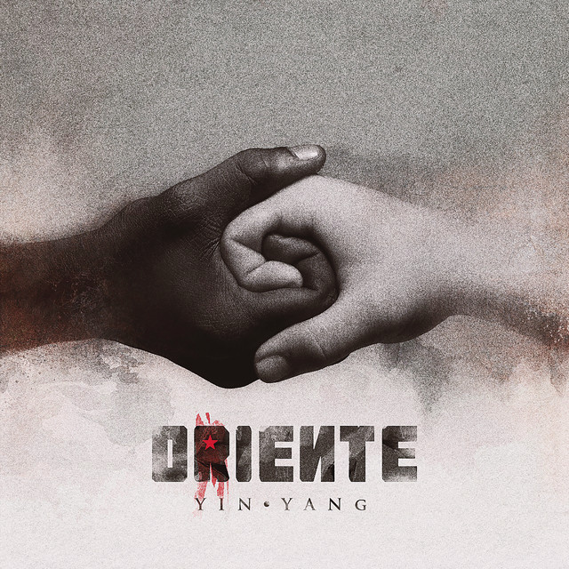

Desorientado sem cortes
- Natal feliz
- Abre alas
- Duplo Jb
- Nos Embalos de Sabado a Noite
- 420 skit
- Terra de Cego
- Guerreiro
- Vida Longa, Mundo Pequeno

Desorientado
- O Vagabundo e a Dama
- Oriental Brasileiro
- Vida Infinita
- Vagabundo Também Ama
- Se Oriente
- Ideologia
- Máximo Respeito
- Eu Sou de Niterói
- Isso aqui é itacoa
- Hoje eu me sinto tão bem
- F D S
- Oxente se oriente
- Ssm show
- Idai
- Beatbox e violino
- Quem sou eu
- Desorientado
- Orientai-me
- Agradecimentos

Oriente (Acústico)
- Linda, Louca e Mimada-Acústico
- Vagabundo Tambem Ama/Vida Longa Mundo Pequeno-Acústico
- Fé-Acústico
- Máximo Respeito-Acústico
- O Viajante-Acústico
- Oriental Brasileiro-Acústico
- Quem Sou Eu-Acústico
- Thungz Masion: Vida Infinita, Pt.1-Acústico
- Aquela Antiga Canção-Acústico
- Medley Nissin-Acústico

Ying-Yang
- R.A.P
- Isso é Rap
- Refém
- Essa Eu Fiz pra Você
- Sutil Diferença
- A Mochila
- Linda, Louca e Mimada(Feat.Rebeca Sauwen)
- Vagabundo é Foda (feat.Self Provoked & Dj Qualy)
- Oriente-se (feat.Criolo)
- Nós Vamos Morrer Pela Nossaa Ousadia
- Yin-Yang
- Roda Gigante(feat.Zeca Baleiro)
- 1001 Mulheres
- Terra(feat.Daniel Profeta)